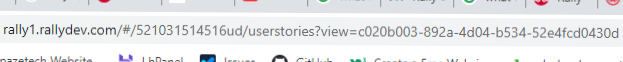

Hi All,
Introduction:
Power BI is a very useful software and app that provides various services to turn the unrelated data sources into reasonable, visually fascinating, and interactive insights. Power BI connects with several data sources and provides visually immersive data visualizations. And Rally API can also be used as a data source that helps to automatically fetch the data from Rally and automates the refreshing of data into the visualizations without any manual interactions. Rally is a CA Agile Central Software that helps to manage projects with a cloud-based technology. Most of the Computer Software industries use Rally Software to enhance their productivity over multiple projects running at the same time.
Rally is an efficient software to increase the productivity of any kind of projects, for instance – software development projects. The industries using Rally Software include- IT and services, Computer Software, Financial services, Hospitals & Healthcare, Banking, Telecommunication, Higher Education, Computer Hardware, and Insurance. The tool or the software is used to track each phase of development process.
In this article, we are going to learn how we can enhance the productivity of reports and dashboards in Microsoft Power BI with the help of Rally Software. You will know each step of connecting Microsoft Power BI Desktop with the API of Rally software.
What is Microsoft Power BI?
Power BI is a software that helps to create visualizations of the available data. It becomes tedious to manipulate the data available in CSV or XLSX formats to find useful insights. But Power BI increases productivity with its features that helps to define several visualizations of the data without any manual intervention. It becomes easy to connect data sources in Power BI to visualize and discover important data. We can add the source of data from number of options available in Microsoft Power BI Desktop to fetch our data. The visualizations that we create are sharable and can be shared with anyone or everyone we want. The Power BI Software can be accessed by the use of Power BI Desktop software or its online Power BI service. Microsoft provides Power BI for windows as Power BI Desktop, an online SaaS (Software as a Service) called Power BI Service, and its mobile apps for windows, iOS, and Android Devices. As it is available to use for multiple platforms, it enhances the flow of work at workplace.
What is Rally?
Rally is a software formerly called CA Agile Central and an enterprise-class platform which is used for scaling agile development practices. Rally helps organizations and teams to plan, manage, and track the continuous improvements in projects. It helps to take useful steps for better output of the work.
Various organizations use Rally software worldwide to find useful insights, improve performance, and track the progress of on-going or completed projects. It accelerates the performance and pace of innovations to deliver value faster to the projects and enterprises. Rally software provides visibility for tracking progress, dependencies, and roadblocks across several teams, programs, and projects.
What is Rally API?
Rally API stands for Rally Application Programming Interface which means that Rally can be integrated with an application by the use of tis API. Rally API is an advanced tool that helps to integrate CA Agile Central subscription with other, external applications and services.
What Rally API do is it makes HTTP POST request to the URL which includes the access to the rally dashboard and fetches data to the application software.
Rally API helps to forecast and track progress, manage scope, and identify bottlenecks over other external applications and services. To use Rally APIs, it is required to create API keys from the CA Agile central application manager for app developers and users. While creating API key, you will be asked for your Rally CA Agile Central Login Username and Password.
Rally API also requires query in the API Key to fetch the data such as pagesize, order, and more.
Advantages of Rally API to automate data fetch and update:
Rally API is very useful when we need to get the data in some external applications and services. Here are some benefits of using Rally API:
- It helps to fetch the data from rally user stories and dashboards to other external application that supports fetching data from web sources
- Extends apps usefulness and customization for the views and dashboards.
- Building own integration with Web Services API can also be done using Rally API.
- Can be integrated with software application that supports data sources from web.
Steps to connect Rally API with Power BI:
Here are some useful steps that will help you go through the process of connecting Rally API with Microsoft Power BI.
- Open Microsoft Power BI Desktop Software.
- Go to Get Data from Home tab of the Power BI Desktop.
- Select Web as a data source.
- Paste the following link that works as a Rally API. https://rally1.rallydev.com/slm/webservice/v2.0/hierarchicalrequirement?workspace=https://rally1.rallydev.com/slm/webservice/v2.0/workspace/User_Story_ViewID&project=https://rally1.rallydev.com/slm/
- In the above link, User_Story_ViewID should be replaced with the user story id that you want to fetch in your Power BI Desktop.
- You can get the user_story_viewid from the address bar. (See Example Below):
- Copy that User Story View Id and paste it in the URL in step 4.
- After that give a pagesize to it i.e. in place of 3000 as any number of rows you want to fetch from that user story.
- After entering this URL as data source in Power BI Desktop, press ENTER and it will start fetching data from the user stories.
- You will be prompted to enter your Rally Credentials in Power BI desktop before it actually start to fetch the data.
- After entering username and password, it will start fetching data from user stories and you can clearly see the rows and columns in Power Query Editor.
- Now you have added this API to Microsoft Power BI and can perform multiple operations on that data such as selecting columns, renaming, and applying to take to the Power BI Desktop for creating visuals from that data.
webservice/v2.0/project/User_Story_ID&fetch=true&start=1&pagesize=3000

Here in the above image, the address from the address bar is shown. When you open you rally dashboard and any user story view. The address will be shown just like in the above image.
You can find the User_Story_ViewID in the address bar located between # and userstories.
FAQs:
Q. Is it helpful to automate data refresh in Power BI dashboards?
A. Yes, it is very useful to automate the data refresh in Power BI dashboards when the data is continuously changing. When you create any dashboard, it should not be static or get data from any source from system as the data will be same even the updated data is available on internet. You can set the data source to web and apply the auto refresh option where the data in dashboards and visuals will be automatically updated when any new information is added on the web.
Q. Can I connect Rally with only limited data in Power BI?
A. Yes, after connecting rally api with power bi desktop. You can perform various operations on that data such as selecting columns, rows, and other operations. By doing this, you can only fetch the limited data in Power BI. It is considered as best practice to choose only limited data to fetch from web to save time and avoid fetching of unusable data.
Q. For what purpose Rally is used?
A. Rally is used by enterprises and business leaders to track, manage, and plan the progress of any projects. The projects can be of any type such as software development projects or other developmental activities in the organisation. It helps to effectively manage all the tasks in the project.
Q. What are the benefits of Power BI?
A. Power BI is very useful to create visuals and interactive dashboards from data. There are some benefits of Power BI which include:
- It provides Business Intelligence to all.
- Power BI helps to bring life to the data.
- Power BI easily connects to data sources.
- Power BI is also capable of Artificial Intelligence.
- Automates the data updation in dashboards by the use of APIs.
- Provides custom visualizations.